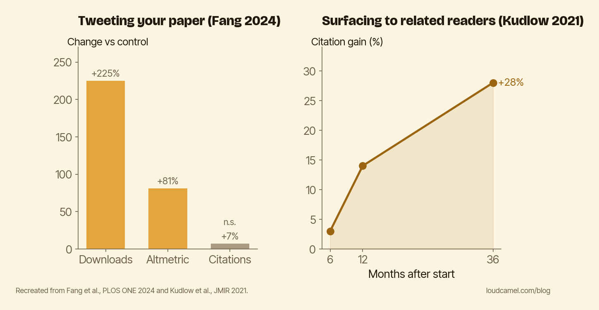

Findability isn't spray-tweeting: the honest case for promoting your work
If you find self-promotion distasteful, that posting your own paper to your own followers feels like vanity dressed up as dissemination, I want to start by agreeing with you. There is even a randomized trial on your side.
Here is the point of this post anyway: broadcasting to your followers and being findable by the right readers are two different things. The first is the vanity move, and it barely moves citations. The second is the durable one, and it does. Conceding the first is how I get to the second honestly.
First, the win for the skeptic
Fang and colleagues (PLOS ONE, 2024) had 11 scientists each tweet one randomly chosen paper per month for 10 months, with matched control papers held back. The tweets worked, in a narrow sense. Downloads jumped by a factor of 2.6 to 3.9. The Altmetric attention score rose about 81%.
Citations were a different story. Roughly 7% higher on Web of Science (p = .258). About 12% higher on Google Scholar (p = .157). Neither was statistically significant. The honest reading: a stream of individual tweets reliably bought attention, and did not reliably buy citations.
So the skeptic is half right. Broadcasting to your follower base is a spike, not a foundation. It moves the vanity numbers and leaves the one that matters roughly where it was. But notice what that trial actually tested. One person, tweeting to the people who already follow them. That is one specific mechanism, and it happens to be the weakest one.
A different trial, a different result
A few years earlier, Kudlow, Brown, and Eysenbach ran the contrast (JMIR, 2021). They promoted 1,600 articles for six months through a cross-publisher recommendation network, surfacing links to readers of related articles, at roughly $6 per paper. The result was a persistent citation increase of about 28%, still widening 36 months later, long after the promotion stopped. I wrote about that trial in more detail in Promoted papers keep pulling ahead.

The chart above puts the two side by side. On the left, Fang 2024: downloads way up, citations flat and not significant. On the right, Kudlow 2021: citations up about 28% and still climbing three years out.
The difference is not effort
It is tempting to read this as “tweeting tried too little, the recommendation network tried harder.” That is not it. Both took real work. The difference is mechanism.
Fang is one person broadcasting to people who already follow them, a burst of attention from an audience that was already paying attention. Kudlow is a system placing the work in front of the right readers at the moment they are reading adjacent work. The first is shaped like applause. The second is shaped like discovery.
This is the distinction the skeptic misses. They are right that performative self-promotion is hollow. People can smell a “please look at my paper” post, and the data says it barely moves the number that counts. But they are wrong about the alternative. The alternative to broadcasting is not silence. It is being findable.
A citation comes from a specific event. Someone working on a related problem runs into your paper while writing their own. That person is almost never in your follower count. They are three fields over, reading something adjacent, at a moment you will never see. You cannot tweet your way into that moment. You can only be discoverable when it arrives.
Do this this week
Stop asking whether self-promotion is tasteful. It is the wrong question, and it keeps careful people quiet for no payoff. Ask instead whether your work is findable by the people who would actually cite it.
Pick your best recent paper and check. Does it surface in the right topic feeds and Google Scholar results? Does it show up where someone in a neighboring field would stumble into it? Is there a clean, plain-language summary a non-specialist could find and understand? If the only place your paper lives is your own timeline, you have built applause, not discovery. That is the part the evidence says compounds.